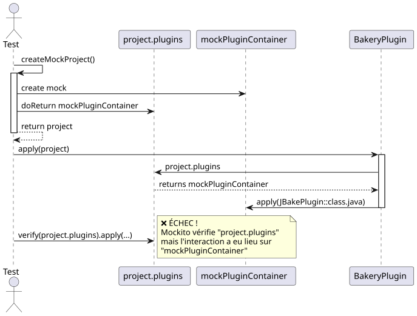
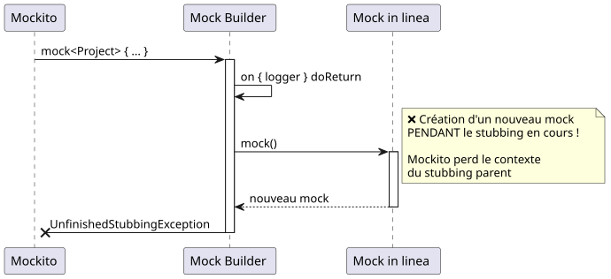
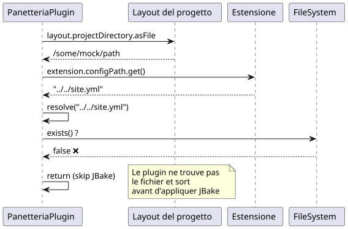
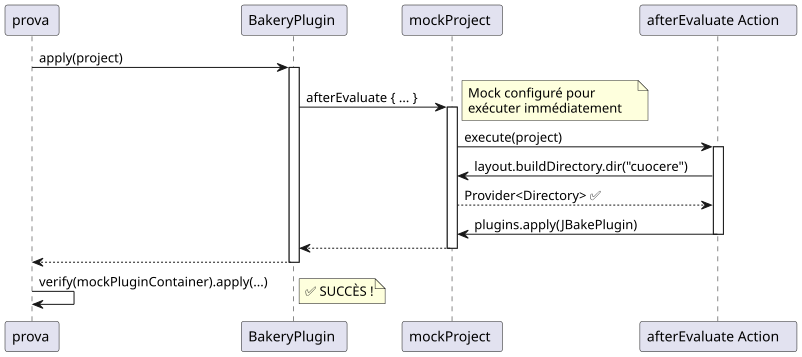
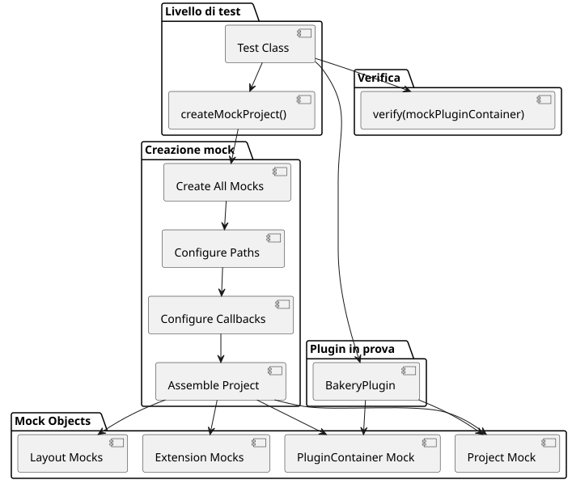

Debugging Mockito: Risolvere l'errore "Wanted but not invoked" nei test dei plugin Gradle
Publié le 17 November 2024
- Introduzione
- Il contesto: Plugin Gradle Bakery
- Problema #1: Verificare il mock errato
- Problema #2 : UnfinishedStubbingException a cascata
- Problema #3: Il file di configurazione non esiste
- Problema #4 : afterEvaluate e NullPointerException
- La soluzione completa
- lezioni apprese
- Architettura di test finale
- Conclusione
- Risorse
Introduzione
Durante lo sviluppo del plugin GradlePanetteriaper il mio blog JBake, ho riscontrato un problema apparentemente semplice: un test unitario che falliva con l’errore`Wanted but not invoked`. Ciò che sembrava essere un banale errore si è rivelato un caso perfetto da manuale per comprendere le sfumature del mocking con Mockito e Kotlin.
In questo articolo, vi porto in un viaggio di debugging metodico, dove ogni soluzione rivela un nuovo problema, fino alla risoluzione finale.
Il contesto: Plugin Gradle Bakery
Il plugin Bakery è un wrapper attorno a JBake che facilita la pubblicazione di siti statici. Ecco la sua struttura semplificata:
class BakeryPlugin : Plugin<Project> {
override fun apply(project: Project) {
val extension = project.extensions.create(
"bakery",
BakeryExtension::class.java
)
project.afterEvaluate {
if (!project.layout.projectDirectory.asFile
.resolve(extension.configPath.get()).exists()) {
println("config file does not exists")
} else {
// C'EST ICI QUE ÇA SE PASSE
project.plugins.apply(JBakePlugin::class.java)
val site = FileSystemManager.from(project, extension.configPath.get())
// Configuration de JBake...
}
}
}
}Il test che falliva era semplice :
@Test
fun `plugin applies jbake gradle plugin`() {
val project = createMockProject()
val plugin = BakeryPlugin()
plugin.apply(project)
verify(project.plugins).apply(JBakePlugin::class.java)
}L’errore :
Wanted but not invoked:
pluginContainer.apply(class org.jbake.gradle.JBakePlugin);
Actually, there were zero interactions with this mock.Problema #1: Verificare il mock errato
La diagnosi

Il problema: Mockito non può tracciare le interazioni su`project.plugins`perché non è altro che un getter che restituisce il mock vero`mockPluginContainer`. La verifica deve essere fatta direttamente sull’istanza del mock.
La soluzione
Modifica`createMockProject()`per restituire i due oggetti :
private fun createMockProject(): Pair<Project, PluginContainer> {
val mockPluginContainer = mock<PluginContainer>()
val mockProject = mock<Project> {
on { plugins } doReturn mockPluginContainer
}
return Pair(mockProject, mockPluginContainer)
}E adattare il test :
@Test
fun `plugin applies jbake gradle plugin`() {
val (project, mockPluginContainer) = createMockProject()
val plugin = BakeryPlugin()
plugin.apply(project)
// ✅ Vérification directe sur le bon mock
verify(mockPluginContainer).apply(JBakePlugin::class.java)
}Problema #2 : UnfinishedStubbingException a cascata
La diagnosi
Una volta applicata la prima correzione, è comparsa un nuovo errore :
UnfinishedStubbingException:
Unfinished stubbing detected here
Hints:
3. you are stubbing the behaviour of another mock inside
before 'thenReturn' instruction is completedIl codice problematico utilizzava la sintassi DSL di Mockito‑Kotlin:
val mockProject = mock<Project> {
on { extensions } doReturn mockExtensionContainer
on { plugins } doReturn mockPluginContainer
on { logger } doReturn mock() // ❌ PROBLÈME ICI !
}
La soluzione
crearetuttii mock fuori da ogni blocco di stubbing, quindi configurarli con`whenever()`:
private fun createMockProject(): Pair<Project, PluginContainer> {
// 1️⃣ Créer TOUS les mocks d'abord
val mockPluginContainer = mock<PluginContainer>()
val mockExtensionContainer = mock<ExtensionContainer>()
val mockLogger = mock<org.gradle.api.logging.Logger>()
val mockProject = mock<Project>()
// 2️⃣ Configurer les mocks séparément avec whenever()
whenever(mockProject.plugins).thenReturn(mockPluginContainer)
whenever(mockProject.extensions).thenReturn(mockExtensionContainer)
whenever(mockProject.logger).thenReturn(mockLogger)
return Pair(mockProject, mockPluginContainer)
}|
regola d’oro: Non chiamare mai`mock()`All’interno di un blocco di configurazione dei mock. Sempre creare i mock per primi, poi configurarli. |
Problema #3: Il file di configurazione non esiste
La diagnosi
Anche con i mock corretti, il test falliva sempre perché il plugin non trovava il file di configurazione:
// Dans BakeryPlugin.kt
if (!project.layout.projectDirectory.asFile
.resolve(extension.configPath.get()).exists()) {
println("config file does not exists")
return@afterEvaluate // ❌ Sort avant d'appliquer JBake !
}
La soluzione
Configurare i mock affinché la risoluzione del percorso funzioni:
private fun createMockProject(): Pair<Project, PluginContainer> {
// ... autres mocks ...
val configFile = File("../../site.yml").canonicalFile
val projectDir = configFile.parentFile
// Configuration cohérente des chemins
whenever(mockConfigPathProperty.get()).thenReturn("site.yml")
whenever(mockProjectDirectory.asFile).thenReturn(projectDir)
// Maintenant : projectDir.resolve("site.yml") existe ! ✅
}Problema #4 : afterEvaluate e NullPointerException
La diagnosi
Il plugin applica JBake in un bloc`afterEvaluate`, e accede a`buildDirectory.dir()`:
project.afterEvaluate {
// ...
project.tasks.withType(JBakeTask::class.java)
.getByName("bake").apply {
output = project.layout.buildDirectory
.dir(site.bake.destDirPath) // ❌ NPE ici !
.get()
.asFile
}
}Il mock di`buildDirectory.dir()ritornava`null.
La soluzione
deridere`afterEvaluate`affinché venga eseguito immediatamente e configurare completamente`buildDirectory`:
private fun createMockProject(): Pair<Project, PluginContainer> {
// ... autres mocks ...
val mockBuildDirectory = mock<DirectoryProperty>()
val buildDir = File(projectDir, "build")
// Mocker dir() pour retourner un Provider valide
whenever(mockBuildDirectory.dir(any<String>())).doAnswer { invocation ->
val path = invocation.arguments[0] as String
val mockDirProvider = mock<Provider<Directory>>()
val mockDir = mock<Directory>()
whenever(mockDir.asFile).thenReturn(File(buildDir, path))
whenever(mockDirProvider.get()).thenReturn(mockDir)
mockDirProvider
}
// Mocker afterEvaluate pour exécution immédiate
whenever(mockProject.afterEvaluate(any<Action<Project>>())).doAnswer { invocation ->
val action = invocation.arguments[0] as Action<Project>
action.execute(mockProject) // ✅ Exécution synchrone
null
}
return Pair(mockProject, mockPluginContainer)
}
La soluzione completa
Ecco la funzione`createMockProject()`finale, che risolve tutti i problemi :
private fun createMockProject(): Pair<Project, PluginContainer> {
// 1️⃣ CRÉER tous les mocks (pas de nested mocks !)
val mockPluginContainer = mock<PluginContainer>()
val mockExtensionContainer = mock<ExtensionContainer>()
val mockLogger = mock<org.gradle.api.logging.Logger>()
val mockTaskContainer = mock<TaskContainer>()
val mockConfigPathProperty = mock<Property<String>>()
val mockBakeryExtension = mock<BakeryExtension>()
val mockProjectDirectory = mock<Directory>()
val mockBuildDirectory = mock<DirectoryProperty>()
val mockProjectLayout = mock<ProjectLayout>()
val mockProject = mock<Project>()
// 2️⃣ CONFIGURER la résolution des chemins
val configFile = File("../../site.yml").canonicalFile
val projectDir = configFile.parentFile
val buildDir = File(projectDir, "build")
whenever(mockConfigPathProperty.get()).thenReturn("site.yml")
whenever(mockConfigPathProperty.isPresent).thenReturn(true)
whenever(mockBakeryExtension.configPath).thenReturn(mockConfigPathProperty)
whenever(mockProjectDirectory.asFile).thenReturn(projectDir)
// 3️⃣ CONFIGURER buildDirectory avec dir()
whenever(mockBuildDirectory.dir(any<String>())).doAnswer { invocation ->
val path = invocation.arguments[0] as String
val mockDirProvider = mock<Provider<Directory>>()
val mockDir = mock<Directory>()
whenever(mockDir.asFile).thenReturn(File(buildDir, path))
whenever(mockDirProvider.get()).thenReturn(mockDir)
mockDirProvider
}
// 4️⃣ ASSEMBLER le projet
whenever(mockProjectLayout.projectDirectory).thenReturn(mockProjectDirectory)
whenever(mockProjectLayout.buildDirectory).thenReturn(mockBuildDirectory)
whenever(mockExtensionContainer.create("bakery", BakeryExtension::class.java))
.thenReturn(mockBakeryExtension)
whenever(mockExtensionContainer.getByType(BakeryExtension::class.java))
.thenReturn(mockBakeryExtension)
whenever(mockProject.extensions).thenReturn(mockExtensionContainer)
whenever(mockProject.plugins).thenReturn(mockPluginContainer)
whenever(mockProject.tasks).thenReturn(mockTaskContainer)
whenever(mockProject.layout).thenReturn(mockProjectLayout)
whenever(mockProject.logger).thenReturn(mockLogger)
whenever(mockProject.projectDir).thenReturn(projectDir)
// 5️⃣ CONFIGURER afterEvaluate pour exécution immédiate
whenever(mockProject.afterEvaluate(any<Action<Project>>())).doAnswer { invocation ->
val action = invocation.arguments[0] as Action<Project>
action.execute(mockProject)
null
}
return Pair(mockProject, mockPluginContainer)
}E il test finale che passa :
@Test
fun `plugin applies jbake gradle plugin`() {
val (project, mockPluginContainer) = createMockProject()
val plugin = BakeryPlugin()
plugin.apply(project)
verify(mockPluginContainer).apply(JBakePlugin::class.java) // ✅ SUCCÈS !
}lezioni apprese

1. Verificare il mock corretto
// ❌ FAUX
verify(project.plugins).apply(JBakePlugin::class.java)
// ✅ CORRECT
val (project, mockPluginContainer) = createMockProject()
verify(mockPluginContainer).apply(JBakePlugin::class.java)2. Evitare i mock annidati
// ❌ FAUX - UnfinishedStubbingException
val mockProject = mock<Project> {
on { logger } doReturn mock() // Nested mock creation !
}
// ✅ CORRECT - Créer séparément
val mockLogger = mock<org.gradle.api.logging.Logger>()
val mockProject = mock<Project>()
whenever(mockProject.logger).thenReturn(mockLogger)3. Mockare i callback di valutazione
// ✅ afterEvaluate doit s'exécuter pour les tests
whenever(mockProject.afterEvaluate(any())).doAnswer { invocation ->
val action = invocation.arguments[0] as Action<Project>
action.execute(mockProject)
null
}4. Testare la risoluzione dei percorsi
// Toujours vérifier que les chemins se résolvent correctement
val extension = project.extensions.getByType(BakeryExtension::class.java)
val configPath = extension.configPath.get()
val projectDir = project.layout.projectDirectory.asFile
val resolvedConfig = projectDir.resolve(configPath)
println("Resolved config: ${resolvedConfig.absolutePath}")
println("Exists: ${resolvedConfig.exists()}")Architettura di test finale

Conclusione
Ciò che sembrava essere un semplice problema di prova si è rivelato essere un eccellente caso di studio :
-
Le sfumature di Mockito con Kotlin
-
L’importanza di mockare gli oggetti corretti
-
La gestione delle callback asincrone nei test
-
La risoluzione dei percorsi nei plugin Gradle
Il debug metodico, comprendendo ogni livello del problema, ha permesso di arrivare a una soluzione robusta e mantenibile.
|
Consiglio per i tuoi test: Se incontri "Wanted but not invoked" con Mockito, chiediti sempre : 1. Sto verificando il mock corretto ? 2. Tutti i miei mock sono creati fuori dai blocchi di configurazione? 3. I miei callback si eseguono davvero? 4. I miei percorsi si risolvono correttamente? |
Risorse
Hai riscontrato problemi simili nei tuoi test? Condividi la tua esperienza nei commenti!
Articoli correlati
14 May 2026